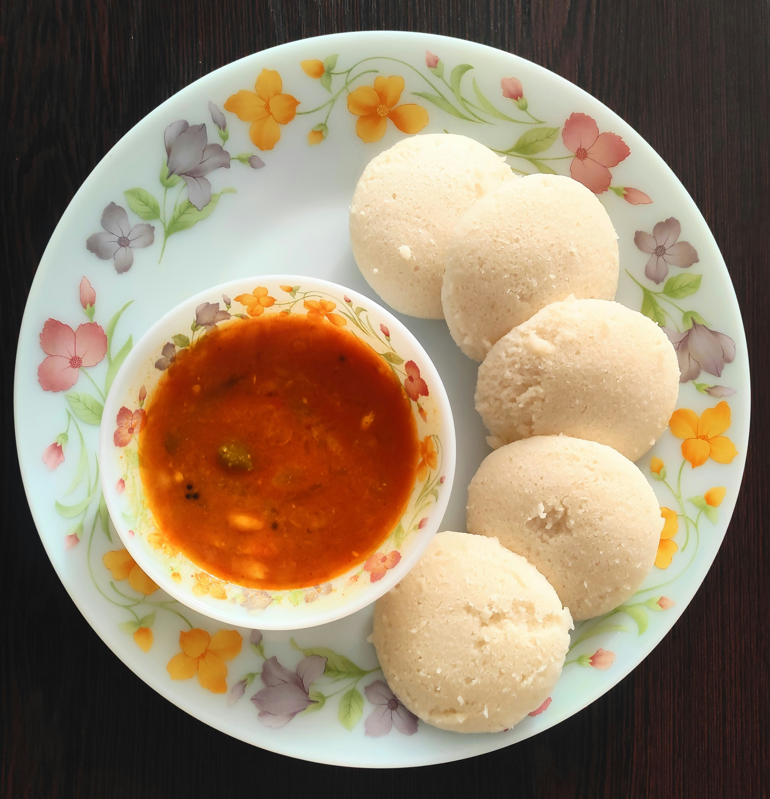

Sambar
 Sambar
Description
Sambar is lentil based stew cooked with pigeon pea and tamarind broth.
It is usually paired with Idly for breakfast and rice for lunch.
It comes in various flavours, for instance, eggplant, drumstick and raw mango flavored sambar is a classic.
Ingredients
- 1 tablespoon Indian sesame oil
- 1/4 teaspoon mustard seeds
- 1/4 teaspoon cumin seeds
- 1/4 teaspoon fenugreek seeds
- 2 sprigs curry leaves
- 5 dried red chillies
- 2 green chillies
- 1 teaspoon rock salt
- 1/2 cup sliced onions
- 2 tomatoes, chopped
- 1/4 teaspoon asafoetida
- 1/2 teaspoon turmeric powder
- 2 sprigs coriander leaves, chopped
- 1/2 a lime size tamarind
- 1/2 cup toor dal
- 3 cup water
Steps
- Heat oil in a pan and add in the mustard seeds, cumin seeds, curry leaves and fenugreek seeds.
Add in the dried red chillies. Break the chillies into two and then add it to the kadai. Add in a few green
chillies too. This sambar does not have any sambar powder or any spice powders. So be generous with the chillies
as the chilli flavour has to be predominant in this sambar. Sauté the chillies until they fluff up and slightly
brown.
- Add in the salt. Rock salt is preferred for this recipe. Sauté the onions till they are soft. It will take about
2-3 minutes. No need to brown the onions. Add in the tomatoes, asafoetida and turmeric powder. Sauté till the
tomatoes are mushy.
- Soak half a lime size tamarind in a cup of hot water for twenty minutes. Squeeze the tamarind to extract the
pulp. Discard the seeds and the pith. Add in the tamarind extract and cook for five minutes.
- Add cooked dal. Dal is cooked in pressure cooker with 2 and half cups of water and about 6 whistles.
- Soak half a lime size tamarind in a cup of hot water for twenty minutes. Squeeze the tamarind to extract the
pulp. Discard the seeds and the pith. Add in the tamarind extract and cook for five minutes.
- Add in the cooked toor dal. Simmer the sambar for five minutes on a low flame. Add in the chopped coriander
leaves. Simmer for a minute more. Milagai Killi potta sambar is ready. Serve with hot rice.